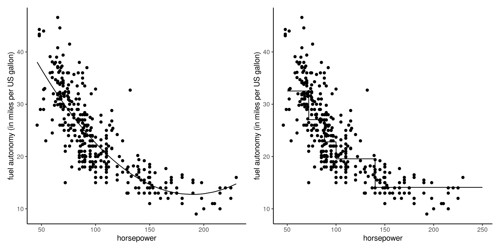
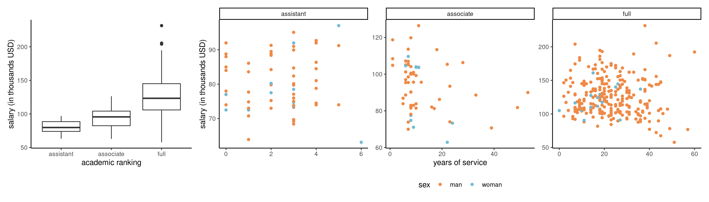
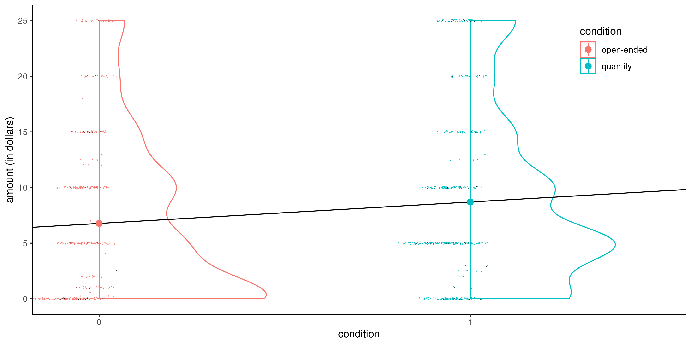
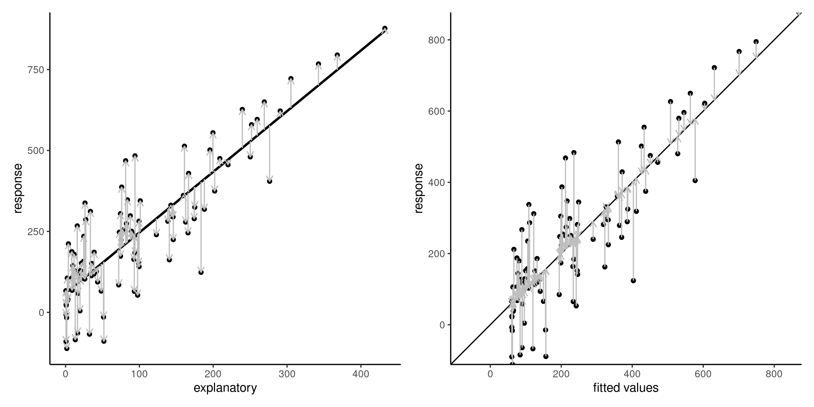

Statistical modelling
03. Linear models
Léo Belzile, HEC Montréal
2024
What is in a model?
A stochastic model typically combines
- a distribution for the data
- a formula linking the parameters or the mean of a response variable \(Y\) conditional on explanatory variables \(\mathbf{X}\)
Models are “golems” for obtaining answers to our questions.
Use of statistical models
- Evaluate the effects of explanatory variables on the mean of a response variable.
- Test for effects of experimental manipulations or other explanatory variables on a response.
- Predict the response for new combinations of explanatories.
Linear model
A linear model is a model for the mean of a continuous response variable \(Y_i\) of a random sample of size \(n\) as a linear function of observed explanatories (also called predictors, regressors or covariates) \(X_1, \ldots, X_p\), \[\begin{align} \underset{\text{conditional mean}}{\mathsf{E}(Y_i \mid \boldsymbol{X}_i=\boldsymbol{x}_i)}=\mu_i=\underset{\substack{\text{linear combination (weighted sum)}\\ \text{of explanatory variables}}}{\beta_0 + \beta_1x_{i1} + \cdots + \beta_p x_{ip}}\equiv \mathbf{x}_i\boldsymbol{\beta}. \end{align}\] where
- \(\mathbf{x}_i = (1, x_{i1}, \ldots, x_{ip})\) is a \((p+1)\) row vector containing the explanatories of observation \(i\)
- \(\boldsymbol{\beta} = (\beta_0, \ldots, \beta_p)^\top\) is a \(p+1\) column vector of coefficients for the mean.
Alternative formulation
For observation \(i\), we can write \[\begin{align*} \underset{\text{observation}\vphantom{\mu_i}}{Y_i} = \underset{\text{mean } \mu_i}{\vphantom{Y_i}\mathbf{x}_i\boldsymbol{\beta}} + \underset{\text{error term}\vphantom{\mu_i}}{\vphantom{Y_i}\varepsilon_i}, \end{align*}\] where \(\varepsilon_i\) are independent additive error terms satisfying:
- \(\mathsf{E}(\varepsilon_i \mid \mathbf{x}_i) = 0\); we fix the expectation of \(\varepsilon_i\) to zero to encode the fact we do not believe the model is systematically off.
- \(\mathsf{Var}(\varepsilon_i \mid \mathbf{x}_i) = \sigma^2\); the variance term \(\sigma^2\) is included to take into account the fact that no exact linear relationship links \(\mathbf{x}_i\) and \(Y_i\), or that measurements of \(Y_i\) are subject to error.
The normal linear model specifies that \[Y_i \mid \boldsymbol{X}_i=\boldsymbol{x}_i \sim \mathsf{normal}(\mathbf{x}_i\boldsymbol{\beta}, \sigma^2).\]
Illustration of more complex linear models
Figure 1: Linear regression models with quadratic trend (left) and a piecewise-linear model discretizing data based on quintiles (right) for the fuel autonomy of cars as a function of motor power.
We can always transform a continuous variable into a categorical one to fit more flexible functional relations between \(X\) and \(Y\), at the cost of additional coefficients.
Notation
To simplify the notation, we aggregate observations using vector-matrix notation as \[\begin{align*} \boldsymbol{Y} = \begin{pmatrix} Y_1 \\ Y_2 \\ \vdots \\ Y_n \end{pmatrix}, \; % \boldsymbol{\varepsilon} = %\begin{pmatrix} % \varepsilon_1 \\ % \varepsilon_2 \\ % \vdots \\ % \varepsilon_n % \end{pmatrix}, \; \mathbf{X} = \begin{pmatrix} 1 & x_{11} & x_{12} & \cdots & x_{1p} \\ 1 & x_{21} & x_{22} & \cdots & x_{2p} \\ \vdots & \vdots & \ddots & \vdots \\ 1 & x_{n1} & x_{n2} & \cdots & x_{np} \end{pmatrix} , \; \boldsymbol{\beta} = \begin{pmatrix} \beta_0 \\ \beta_1 \\ \beta_2 \\ \vdots \\ \beta_p \end{pmatrix} \end{align*}\] Notably, we use \(\mathbf{X}\) for the \(n \times (p+1)\) model matrix (also sometimes design matrix) concatenating a column of ones and the \(p\) column vectors of explanatories.
The \(i\)th row of \(\mathbf{X}\) is denoted \(\mathbf{x}_i\).
Motivating example 1 — Consistency of product description
Study 1 of Lee and Choi (2019) (dataset LC19_S1, package hecedsm) considered descriptors and the impact on the perception of a product on the discrepancy between the text description and the image.
In their first experience, a set of six toothbrushes is sold, but the image shows either a pack of six, or a single one).
The authors also measured the prior familiarity with the brand of the item. Participants were recruited using an online panel.
Variables include
prodeval: average product evaluation score of three 9 point scales (higher values are better)familiarity: Likert scale from 1 to 7 for brand familiarityconsistency: image-text groups, eitherconsistentorinconsistent
Motivating example 2 – Teaching to read
The BSJ92 dataset in package hecedsm contains the results of an experimental study by Baumann, Seifert-Kessell, and Jones (1992) on the effectiveness of different reading strategies on understanding of children.
Sixty-six fourth-grade students were randomly assigned to one of three experimental groups: (a) a Think-Aloud (TA) group, in which students were taught various comprehension monitoring strategies for reading stories (e.g., self-questioning, prediction, retelling, rereading) through the medium of thinking aloud; (b) a Directed Reading-Thinking Activity (DRTA) group, in which students were taught a predict-verify strategy for reading and responding to stories; or (c) a Directed Reading Activity (DRA) group, an instructed control, in which students engaged in a noninteractive, guided reading of stories.
Variables include
group: factor for experimental group, one of directed reading-thinking activity (DRTA), think-aloud (TA) and directed reading group (DR)pretest1: score (out of 16) on pretest for the error detection taskposttest1: score (out of 16) on an error detection task
Motivating example 3 — College salary
The college dataset from hecstatmod contains observational data collected in a college in the United States. The goal of the administration was to investigate potential gender inequality in the salary of faculty members.
The data contains the following variables:
salary: nine-month salary of professors during the 2008–2009 academic year (in thousands USD).rank: academic rank of the professor (assistant,associateorfull).field: categorical variable for the field of expertise of the professor, one ofappliedortheoretical.sex: binary indicator for sex, eithermanorwoman.service: number of years of service in the college.years: number of years since PhD.
Motivating example 4 — Suggesting amounts for donations
Study 1 of Moon and VanEpps (2023) considers proportion of donators to a charity. Participants in the online panel were provided with an opportunity to win 25$ and donate part of this amount to a charity of their choosing. The data provided include only people who did not exceed this amount and indicated donating a non-zero amount.

Variables include
before: did people donate before to this charity? 0 for no, 1 for yes.condition: factor for the experimental condition, either anopen-endedamount or a suggestedquantityamount: amount of proposed donation,NAif the person declined to donate
Exploratory data analysis
Exploratory data analysis (EDA) is an iterative procedure by which we query the data, using auxiliary information, summary statistics and data visualizations, to better inform our modelling.
It is useful to get a better understanding of
- the features of the data (sampling frame, missing values, outliers)
- the nature of the observations, whether responses or explanatories
- the relationship between them
See Chapter 11 of Alexander (2023) for examples.
Checklist for EDA
Check that
- categorical variables are properly code as factors.
- missing values are properly declared as such using
NA(strings,999, etc.) - there is no missingness patterns (
NAfor some logical values) - there are enough modalities of each level of categorical variables
- there is no explanatory variable derived from the response variable.
- the subset of observations used for statistical analysis is adequate.
- there are no anomalies or outliers that would distort the results.
EDA for Example 1
Consider a linear model for the average product evaluation score, prodeval, as a function of the familiarity of the brand and the experimental factor consistency.
data(LC19_S1, package = "hecedsm")
str(LC19_S1)
## tibble [96 × 5] (S3: tbl_df/tbl/data.frame)
## $ prodeval : num [1:96] 9 8.33 8.67 7.33 9 ...
## $ familiarity: int [1:96] 7 7 7 7 6 5 7 7 4 7 ...
## $ consistency: Factor w/ 2 levels "consistent","inconsistent": 1 1 1 1 1 1 1 1 1 1 ...
## $ gender : Factor w/ 2 levels "male","female": 1 2 1 2 1 1 2 1 1 1 ...
## $ age : int [1:96] 22 26 35 26 39 34 30 33 24 42 ...
length(unique(LC19_S1$prodeval))
## [1] 19The prodeval response is heavily discretized, with only 19 unique values ranging between 2.33 and 9.
Model matrix for Example 1
Product consistency is coded 0 for consistent image/text descriptions and 1 if inconsistent.
EDA for Example 3
Salary increases with years of service, but there is more heterogeneity as we move up ranks.
Figure 2: Salaries of professors as a function of the number of years of service and the academic ranking
Logically, assistant professors are either promoted or kicked out after at most 6 years according to the data. The limited number of years prevents large variability for their salaries.
Variables years and service, are strongly correlated with a correlation of 0.91.
EDA for Example 3
Note the much smaller number of women in the sample: this will impact our power to detect differences between sex. A contingency table of sex and academic rank can be useful to see if the proportion of women is the same in each rank: women represent 16% of assistant professors and 16% of associate profs, but only 7% of full professors and these are better paid on average.
| assistant | associate | full | |
|---|---|---|---|
| man | 56 | 54 | 248 |
| woman | 11 | 10 | 18 |
EDA for Example 4
data(MV23_S1, package = "hecedsm")
str(MV23_S1)
## tibble [869 × 4] (S3: tbl_df/tbl/data.frame)
## $ before : int [1:869] 0 1 0 1 1 1 1 0 1 0 ...
## $ donate : int [1:869] 0 0 0 1 1 0 1 0 0 1 ...
## $ condition: Factor w/ 2 levels "open-ended","quantity": 1 1 1 1 2 2 2 1 1 1 ...
## $ amount : num [1:869] NA NA NA 10 5 NA 20 NA NA 25 ...
summary(MV23_S1)
## before donate condition amount
## Min. :0.000 Min. :0.00 open-ended:407 Min. : 0.2
## 1st Qu.:0.000 1st Qu.:0.00 quantity :462 1st Qu.: 5.0
## Median :1.000 Median :1.00 Median :10.0
## Mean :0.596 Mean :0.73 Mean :10.7
## 3rd Qu.:1.000 3rd Qu.:1.00 3rd Qu.:15.0
## Max. :1.000 Max. :1.00 Max. :25.0
## NA's :1 NA's :235If we include amount as response variable, the 235 missing observations will be removed.
- This is okay if we want to compare the average amount of people who donated
- We need to transform
NAs to zeros otherwise.
The binary variables donate and before are both factors encoded as 0/1.
What explanatories?
In experimental designs, only the variables experimentally manipulated (random assignment to groups) are needed.
- additional concomitant covariates added if they are correlated with the response to increase power (e.g., pre-test for Baumann, Seifert-Kessell, and Jones (1992), which gives a measure of the individual student ability).
In observational settings, we need variables to isolate the effect and control for confounders (more later).
Parameter interpretation
In linear regression, the parameter \(\beta_j\) measures the effect of the variable \(X_j\) on the mean response variable \(\mathsf{E}(Y \mid \boldsymbol{X})\) while controlling for all other variables in the model.
- For every one unit increase in \(X_j\), \(Y\) increases on average by \(\beta_j\) when all other variables are held constant. \[\begin{align*} \beta_1 &= \mathsf{E}(Y \mid X_1=x_1+1,X_2=x_2, \ldots, X_p=x_p) \\ & \qquad \qquad - \mathsf{E}(Y \mid X_1=x_1,X_2=x_2,\ldots,X_p=x_p) \\ &= \left\{\beta_1 (x_1+1) + \beta_2 x_2 + \cdots \beta_p x_p \right\} \\ & \qquad \qquad -\left\{\beta_1 x_1 + \beta_2 x_2 + \cdots \beta_p x_p \right\} \end{align*}\]
Marginal effect
We can also consider the slope of the mean response as a function of an explanatory.
\[\text{marginal effect of }X_j =\frac{\partial \mathsf{E}(Y \mid \boldsymbol{X})}{\partial X_j}.\]
The coefficient \(\beta_j\) is also the marginal effect of \(X_j\) in simple settings (only linear terms, no interactions).
Interpretation of the intercept
The mean model specification is \[\begin{align*} \mathsf{E}(Y_i \mid \boldsymbol{X}_i = \boldsymbol{x}_i) = \beta_0 + \beta_1 x_{i1} + \ldots + \beta_p x_{ip}. \end{align*}\] The intercept \(\beta_0\) represents the mean value of \(Y\) when all of the explanatory variables values are set to zero, \(\boldsymbol{x}_i=\boldsymbol{0}_p\). \[\begin{align*} \beta_0 &= \mathsf{E}(Y \mid X_1=0,X_2=0,\ldots,X_p=0) \\ &= \beta_0 + \beta_1 \times 0 + \beta_2 \times 0 + \cdots + \beta_p \times 0 \end{align*}\] Of course, it is possible that this interpretation does not make sense in the context of the study. Centering continuous covariates (so that their sample mean is zero) makes the intercept more interpretable.
Linear models with a single binary variable
Consider for example a linear model for the data from Moon and VanEpps (2023) that includes the amount (in dollars, from 0 for people who did not donate, up to 25 dollars).
The equation of the simple linear model that includes the binary variable condition is \[\begin{align*}
\mathsf{E}(\texttt{amount} \mid \texttt{condition})&= \beta_0 + \beta_1 \mathbf{1}_{\texttt{condition}=\texttt{quantity}}.
\\&= \begin{cases}
\beta_0, & \texttt{condition}=0, \\
\beta_0 + \beta_1 & \texttt{condition}=1.
\end{cases}
\end{align*}\]
- The intercept \(\beta_0\) is the average of the control group
- The average of the treatment group is \(\beta_0 + \beta_1 = \mu_1\) and
- \(\beta_1=\mu_1-\mu_0\) represents the difference between the average donation amount of people given
open-endedamounts and those who are offered suggested amounts (quantity)
Simple linear regression with a binary explanatory

Figure 3: Simple linear model for the MV23_S1 data using the binary variable condition as explanatory with half-violin and jittered scatterplots. Circles indicate the sample means.
Even if the linear model defines a line, the latter is only meaningful when evaluated at \(0\) or \(1\).
Data are heavily discretized, with lots of ties and zeros, but the sample size \((n=869)\) is large.
Dummy coding for categorical variables
Consider the Baumann, Seifert-Kessell, and Jones (1992) study and the sole inclusion of the group variable. The data are ordered by group: the first 22 observations are for group DR, the 22 next ones for group DRTA and the last 22 for TA. If we fit a model with group as categorical variables
data(BSJ92, package = "hecedsm")
class(BSJ92$group) # Check that group is a factor
## [1] "factor"
levels(BSJ92$group) # First level shown is reference
## [1] "DR" "DRTA" "TA"
# Print part of the model matrix
# (three individuals from different groups)
model.matrix(~ group, data = BSJ92)[c(1,23,47),]
## (Intercept) groupDRTA groupTA
## 1 1 0 0
## 23 1 1 0
## 47 1 0 1
# Compare with levels of factors recorded
BSJ92$group[c(1,23,47)]
## [1] DR DRTA TA
## Levels: DR DRTA TAANOVA
The mean model specification is \[\mathsf{E}(Y \mid \texttt{group})= \beta_0 + \beta_1\mathbf{1}_{\texttt{group}=\texttt{DRTA}} + \beta_2\mathbf{1}_{\texttt{group}=\texttt{TA}}.\] Since the variable group is categorical with \(K=3\) levels, we need \(K-1 = 2\) dummies.
With the default treatment parametrization, we obtain
- \(\mathbf{1}_{\texttt{group}=\texttt{DRTA}}=1\) if
group=DRTAand zero otherwise. - \(\mathbf{1}_{\texttt{group}=\texttt{TA}}=1\) if
group=TAand zero otherwise.
Because the model includes an intercept and the model ultimately describes three group averages, we only need two additional variables.
Categorical variables
With the treatment parametrization, the group mean of the reference group equals the intercept coefficient, \(\mu_{\texttt{DR}}=\beta_0\),
| (Intercept) | groupDRTA | groupTA | |
|---|---|---|---|
| DR | 1 | 0 | 0 |
| DRTA | 1 | 1 | 0 |
| TA | 1 | 0 | 1 |
Parameter interpretation
When group=DR (baseline), both indicator variables groupDRTA and groupTA are zero. The average in each group is
- \(\mu_{\texttt{DR}} = \beta_0\),
- \(\mu_{\texttt{DRTA}}=\beta_0 + \beta_1\) and
- \(\mu_{\texttt{TA}} = \beta_0 + \beta_2\).
We thus find that \(\beta_1\) is the difference in mean between group DRTA and group DR, and similarly \(\beta_2=\mu_{\texttt{TA}}- \mu_{\texttt{DR}}\).
Parameter interpretation
- For each point score on the pre-test, the post-test score increases by 6.188 marks regardless of the group.
- The
DRTAgroup has an average which is 3.627 higher than that of people with the same pre-test score from the baselineDRgroup. - The
TAgroups, ceteris paribus score 2.036 points higher on average than those of theDRgroup. - Because we centered the continuous covariate
pretest1, the intercept \(\beta_0\) is the average post-test score of a person from theDRgroup who scored the overall average of all 66 students in the pre-test.
Parameter estimation
Consider a model matrix \(\mathbf{X}\) and a linear model formulation \(\mathsf{E}(Y_i) = \mathbf{x}_i\boldsymbol{\beta}\).
The linear model includes
- \(p+1\) mean parameters \(\boldsymbol{\beta}\) and
- a variance parameter \(\sigma^2\).
Ordinary least squares problem
We can try to find the parameter vector \(\boldsymbol{\beta} \in \mathbb{R}^{p+1}\) that minimizes the mean squared error, i.e., the average squared vertical distance between the fitted values \(\widehat{y}_i=\mathbf{x}_i\widehat{\boldsymbol{\beta}}\) and the observations \(y_i\).
The optimization problem is \[\begin{align*} \widehat{\boldsymbol{\beta}}&=\mathrm{arg min}_{\boldsymbol{\beta} \in \mathbb{R}^{p+1}}\sum_{i=1}^n (y_i-\mathbf{x}_i\boldsymbol{\beta})^2 \\&=(\boldsymbol{y}-\mathbf{X}\boldsymbol{\beta})^\top(\boldsymbol{y}-\mathbf{X}\boldsymbol{\beta}). \end{align*}\]
Ordinary least squares estimator
If the \(n \times p\) matrix \(\mathbf{X}\) is full-rank, meaning that it’s columns are not linear combinations of one another, the quadratic form \(\mathbf{X}^\top \mathbf{X}\) is invertible and we obtain the solution to the least square problems, \[ \widehat{\boldsymbol{\beta}} = \left(\mathbf{X}^\top \mathbf{X}\right)^{-1}\mathbf{X}^\top \boldsymbol{y}. \qquad(1)\] This is the ordinary least squares estimator (OLS). The explicit solution means that no numerical optimization is needed for linear models.
Orthogonal decomposition
- The vector of fitted values \(\widehat{\boldsymbol{y}} =\mathbf{X} \widehat{\boldsymbol{\beta}} = \mathbf{H}_{\mathbf{X}}\boldsymbol{y}\) is the projection of the response vector \(\boldsymbol{y}\) on the linear span generated by the columns of \(\mathbf{X}\).
- The ordinary residuals \(\boldsymbol{e} = \boldsymbol{y} - \widehat{\boldsymbol{y}}\) are the difference between observation and predictions.
- Simple algebraic manipulations show that the inner product between ordinary residuals and fitted values is zero, \[\widehat{\boldsymbol{y}}^\top \boldsymbol{e} = \sum_{i=1}^n \widehat{y}_ie_i=0,\] so they are uncorrelated and \(\widehat{\mathsf{cor}}(\widehat{\boldsymbol{y}}, \boldsymbol{e})=0\)
- Similarly, \(\mathbf{X}^\top\boldsymbol{e}=\boldsymbol{0}_{p+1}\).
- The mean of \(\boldsymbol{e}\) must be zero provided that \(\mathbf{1}_n\) is in the linear span of \(\mathbf{X}\).
Residuals
Figure 4: Ordinary residuals \(e_i\) (vertical vectors) added to the regression line in the scatter \((x, y)\) (left) and the fit of response \(y_i\) against fitted values \(\widehat{y}_i\). The ordinary least squares line minimizes the average squared length of the ordinary residuals.
Maximum likelihood estimation of the normal linear model
Assuming \(Y_i \sim \mathsf{normal}(\mathbf{x}_i\boldsymbol{\beta}, \sigma^2)\) are independent, the log likelihood of the normal linear model is \[\begin{align*} \ell(\boldsymbol{\beta}, \sigma)&\propto-\frac{n}{2} \ln (\sigma^2) -\frac{(\boldsymbol{y}-\mathbf{X}\boldsymbol{\beta})^\top(\boldsymbol{y}-\mathbf{X}\boldsymbol{\beta})}{2\sigma^2} \end{align*}\] Maximizing the log likelihood with respect to \(\boldsymbol{\beta}\) is equivalent to minimizing the sum of squared errors \(\sum_{i=1}^n (y_i - \mathbf{x}_i\boldsymbol{\beta})^2\), regardless of the value of \(\sigma\), and we recover the OLS estimator \(\widehat{\boldsymbol{\beta}}\).
Maximum likelihood estimator of the variance
The MLE for \(\sigma^2\) is obtained from the profile log likelihood for \(\sigma^2\), excluding constant terms that don’t depend on \(\sigma^2\), is \[\begin{align*} \ell_{\mathrm{p}}(\sigma^2) &\propto-\frac{1}{2}\left\{n\ln\sigma^2+\frac{1}{\sigma^2}(\boldsymbol{y}-\mathbf{X}\hat{\boldsymbol{\beta}})^\top(\boldsymbol{y}-\mathbf{X}\hat{\boldsymbol{\beta}})\right\}. \end{align*}\]
MLE for the variance
Differentiating each term with respect to \(\sigma^2\) and setting the gradient equal to zero yields the maximum likelihood estimator \[\begin{align*} \widehat{\sigma}^2&=\frac{1}{n}(\boldsymbol{Y}-\mathbf{X}\hat{\boldsymbol{\beta}})^\top(\boldsymbol{Y}-\mathbf{X}\hat{\boldsymbol{\beta}})\\&= \frac{1}{n} \sum_{i=1}^n (y_i - \mathbf{x}_i\widehat{\boldsymbol{\beta}})^2\\&= \frac{\mathsf{SS}_e}{n}; \end{align*}\] where \(\mathsf{SS}_e\) is the sum of squared residuals. The usual unbiased estimator of \(\sigma^2\) calculated by software is \(S^2=\mathsf{SS}_e/(n-p-1)\), where the denominator is the sample size \(n\) minus the number of mean parameters \(\boldsymbol{\beta}\), \(p+1\).
Observed information for normal linear regression
The entries of the observed information matrix of the normal linear model are \[\begin{align*} -\frac{\partial^2 \ell(\boldsymbol{\beta}, \sigma^2)}{\partial \boldsymbol{\beta}\partial \boldsymbol{\beta}^\top} &= \frac{1}{\sigma^2} \frac{\partial \mathbf{X}^\top(\boldsymbol{y}-\mathbf{X}\boldsymbol{\beta})}{\partial \boldsymbol{\beta}^\top} = \frac{\mathbf{X}^\top\mathbf{X}}{\sigma^2}\\ -\frac{\partial^2 \ell(\boldsymbol{\beta}, \sigma^2)}{\partial \boldsymbol{\beta}\partial \sigma^2} &=- \frac{\mathbf{X}^\top(\boldsymbol{y}-\mathbf{X}\boldsymbol{\beta})}{\sigma^4}\\ -\frac{\partial^2 \ell(\boldsymbol{\beta}, \sigma^2)}{\partial (\sigma^2)^2} &= -\frac{n}{2\sigma^4} + \frac{(\boldsymbol{y}-\mathbf{X}\boldsymbol{\beta})^\top(\boldsymbol{y}-\mathbf{X}\boldsymbol{\beta})}{\sigma^6}. \end{align*}\]
Information matrices for the normal linear regression
If we evaluate the observed information at the MLE, we get \[\begin{align*} j(\widehat{\boldsymbol{\beta}}, \widehat{\sigma^2}) = \begin{pmatrix} \frac{\mathbf{X}^\top\mathbf{X}}{\widehat{\sigma^2}} & \boldsymbol{0}_{p+1} \\ \boldsymbol{0}_{p+1}^\top & \frac{n}{2\widehat{\sigma^4}} \end{pmatrix} \end{align*}\] since \(\widehat{\sigma}^2=\mathsf{SS}_e/n\) and the residuals are orthogonal to the model matrix.
Since \(\mathsf{E}(Y \mid \mathbf{X})=\mathbf{X}\boldsymbol{\beta}\), the Fisher information is \[\begin{align*} i(\boldsymbol{\beta}, \sigma^2) = \begin{pmatrix} \frac{\mathbf{X}^\top\mathbf{X}}{\sigma^2} & \boldsymbol{0}_{p+1} \\ \boldsymbol{0}_{p+1}^\top & \frac{n}{2\sigma^4} \end{pmatrix} \end{align*}\]
Remarks
Since zero off-correlations in normal models amount to independence, the MLE for \(\sigma^2\) and \(\boldsymbol{\beta}\) are asymptotically independent.
Provided the \((p+1)\) square matrix \(\mathbf{X}^\top\mathbf{X}\) is invertible, the large-sample variance of the coefficients are
- \(\mathsf{Var}(\widehat{\boldsymbol{\beta}})=\sigma^2(\mathbf{X}^\top\mathbf{X})^{-1}\),
- \(\mathsf{Var}(\widehat{\sigma}^2) = 2\sigma^4/n\).
References

Baumann, James F., Nancy Seifert-Kessell, and Leah A. Jones. 1992. “Effect of Think-Aloud Instruction on Elementary Students’ Comprehension Monitoring Abilities.” Journal of Reading Behavior 24 (2): 143–72. https://doi.org/10.1080/10862969209547770.
Lee, Kiljae, and Jungsil Choi. 2019. “Image-Text Inconsistency Effect on Product Evaluation in Online Retailing.” Journal of Retailing and Consumer Services 49: 279–88. https://doi.org/10.1016/j.jretconser.2019.03.015.
Moon, Alice, and Eric M VanEpps. 2023. “Giving Suggestions: Using Quantity Requests to Increase Donations.” Journal of Consumer Research 50 (1): 190–210. https://doi.org/10.1093/jcr/ucac047.
Comments on formulation